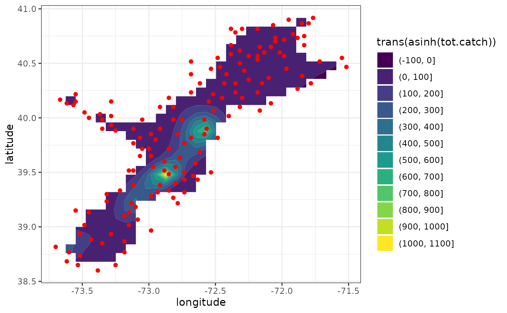

Scallop catches at 148 locations of a 1990 survey cruise on the Atlantic continental shelf off Long Island,
New York (Ecker and Heltshe 1994; the data of HRW::scallop), with the knots of M. P. Wand's thin-plate
spline fit (scallopKnots) and the boundary of the survey area (scallopBdry).
Format
scallop: a data frame with 148 rows and 3 columns:
- latitude
degrees latitude (north).
- longitude
degrees longitude (negative: west).
- tot.catch
total scallop catch at the location.
scallopKnots (37 rows) and scallopBdry (77 rows, a polygon): data frames with columns
longitude and latitude.
Source
Ecker, M. D. and Heltshe, J. F. (1994). Geostatistical estimates of scallop abundance. In Case Studies in Biometry, eds. N. Lange et al., Wiley, New York, 107-124.
References
Ruppert, D., Wand, M. P. and Carroll, R. J. (2003). Semiparametric Regression. Cambridge University Press.
Examples
data(scallop)
data(scallopKnots)
data(scallopBdry)
# a thin-plate surface of asinh(catch) (low-rank kriging) with the given knots
fit <- semireg(asinh(tot.catch) ~ s(longitude, latitude, bs = "ztps",
xt = list(knots = as.matrix(scallopKnots))),
data = scallop)
anova(fit)$smooth
#> term variance logLik logLik.without LRT p.value
#> 1 s_longitude_latitude 69.32842 -308.0205 -334.2778 52.51473 9.999e-05
#> test
#> 1 exact restricted LRT (10000 simulations)
# the surface inside the survey area, on the scale of the catch
semipred(fit, covariate = c("longitude", "latitude"), boundary = scallopBdry, trans = sinh)$plt
